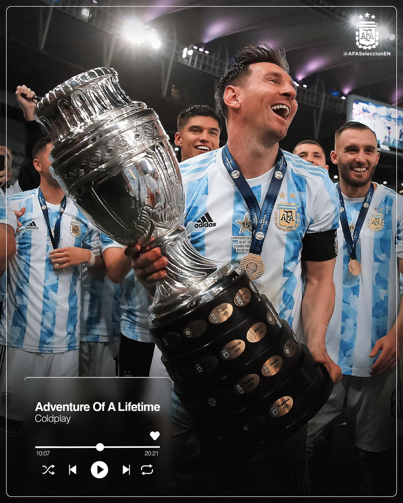
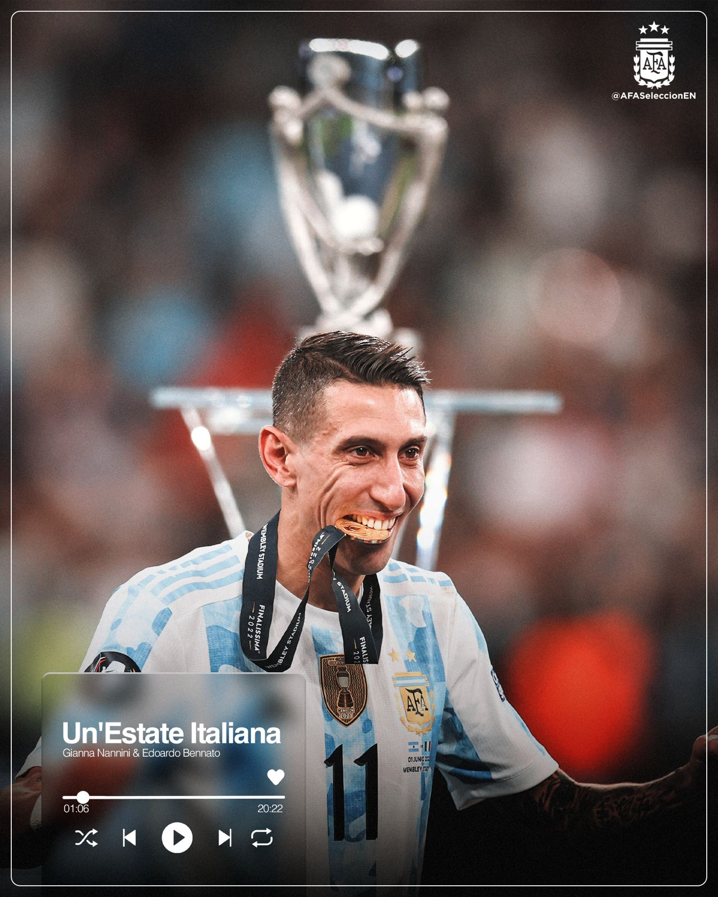
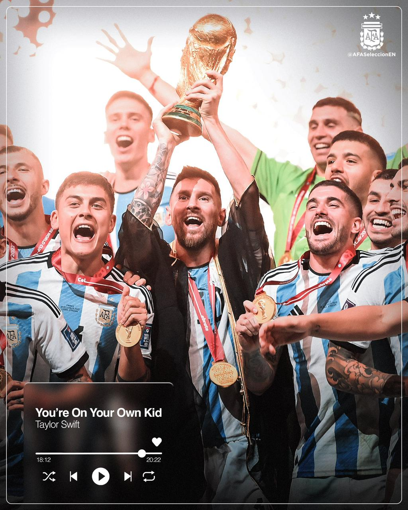
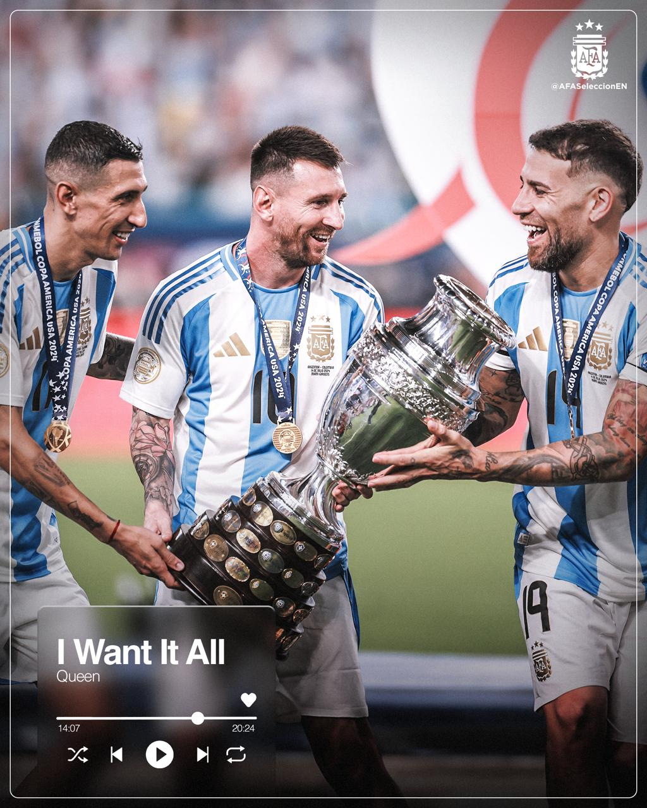

Títulos de Argentina
Copa América 2021
Finalissima 2022
Mundial Qatar 2022
Copa América 2024
Jugadores
Delanteros

Lionel Messi
Mediocampistas

Leandro Paredes
Defensas

Nicolas Tagliafico
Arqueros

Emiliano Martínez
Momentos Icónicos
El regreso a Buenos Aires

Después de aquel 18 de Diciembre, la selección Argentina regresó a Buenos Aires y fue recibida por miles de hinchas en el Obelisco.
Recibimiento en el Monumental

El 23 de Marzo de 2023, la Albiceleste se reunió nuevamente en el Monumental para homenajear a los campeones del mundo.